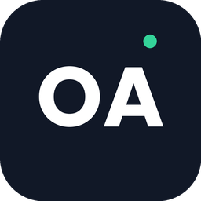

About the app
OA-Operation Application helps small and medium businesses manage daily operations: staff attendance, leave requests, payslips, HR records and company assets.

Attendance, leave, payroll and staff records in one simple app.
OA-Operation Application helps small and medium businesses manage daily operations: staff attendance, leave requests, payslips, HR records and company assets.